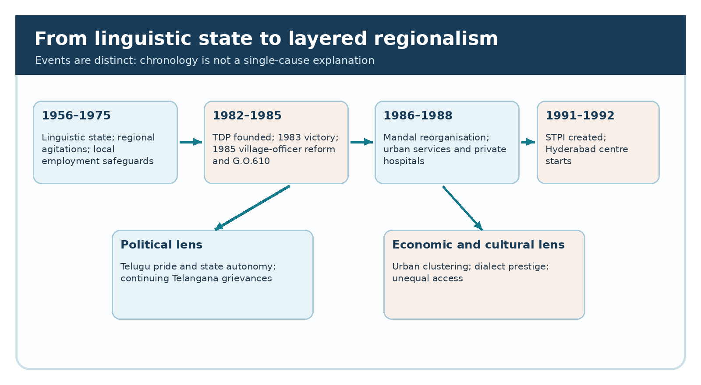
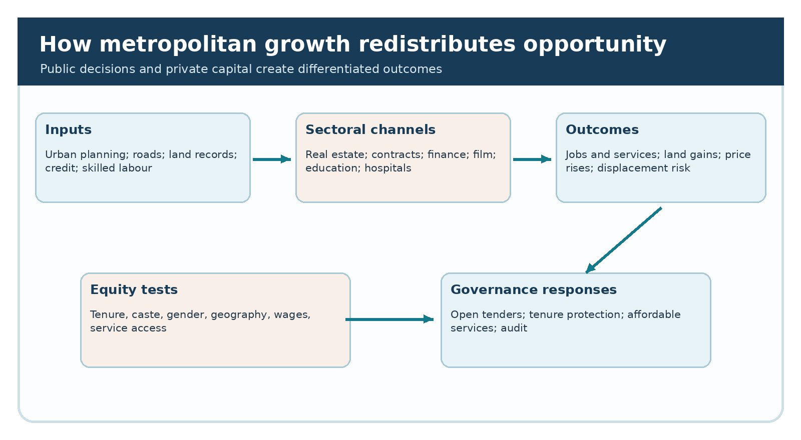
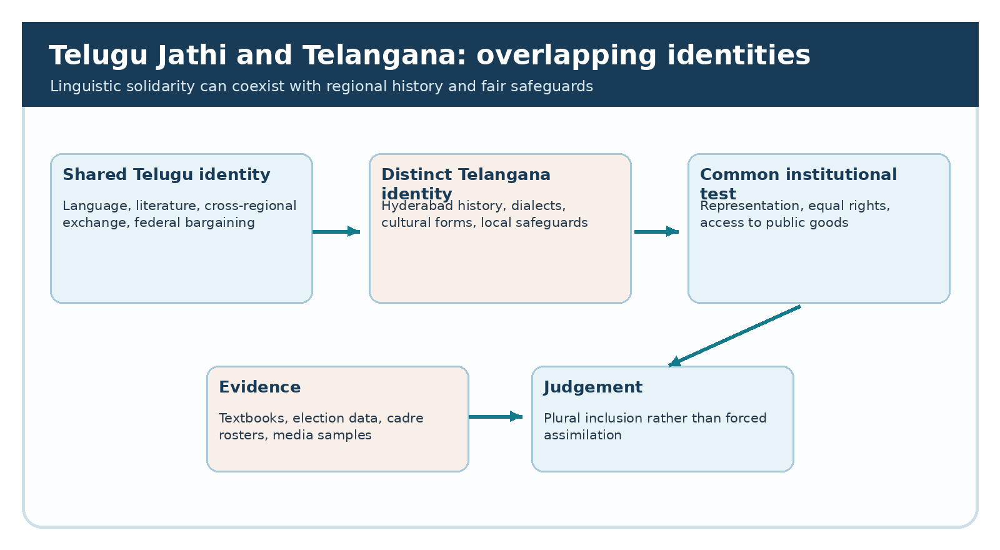

Integrated PDF · Editable master · Preserved original PDF
TGPSC Group I Mains | Telangana Movement and State Formation | Original English study manuscript | 25 October 2026 | Publication draft — independent academic review pending
Syllabus authentication and limits. The commission-hosted 2022 Group I syllabus is indexed with this Item 3: “Rise of Regional Parties in 1980’s and Changes in the Political, Socio-Economic and Cultural fabric of Telangana- Notion of Telugu Jathi and suppression of Telangana identity- Expansion of new economy in Hyderabad and other parts of Telangana; Real Estate, Contracts, Finance Companies; Film, Media and Entertainment Industry; Corporate Education and Hospitals etc; Dominant Culture and its implications for Telangana self respect, Dialect, Language and Culture.” The original commission PDF returned HTTP 403 when opened, and the original Group I Notification 02/2024 has not been independently reopened during this run. The text is corroborated by the commission's search index and historical syllabus reproductions, not a newly inspected signed notification.
Question provenance and neutrality. All MCQs, case studies and mains prompts in this manuscript are original practice, not official previous-year questions. The syllabus's phrase “suppression of Telangana identity” describes a historical grievance to investigate, not a premise that every Telugu-speaking person, regional-party voter or cultural producer supported suppression. Distinguish contemporary claims, policy records, institutional outcomes and later retrospective interpretations.
| Syllabus demand | Study sections | What an examiner can test |
|---|---|---|
| Rise of regional parties in the 1980s | 1–9 | Causes, Telugu Desam's emergence, elections, federalism and political representation |
| Telugu Jathi and Telangana identity | 10–13, 26–30 | Linguistic unity versus regional pluralism, cultural hierarchy and counter-arguments |
| New economy: real estate, contracts, finance | 14–19 | Land-value chains, public procurement, financial inclusion and distributional consequences |
| Film, media and entertainment | 20–22 | Industrial clustering, agenda setting, dialect stereotypes and plural representation |
| Corporate education and hospitals | 23–24 | Market formation, access, equity, regulation and quality |
| Language, self-respect and culture | 25–31 | Dialect prestige, festivals, representation, gender and caste |
| Exam application and evidence audit | 32–34 and appendices | Timeline, case analysis, revision, original MCQs and structured mains answers |
The syllabus joins three developments that are often taught separately: a change in who exercised political power, a change in who controlled profitable urban sectors, and a struggle over which cultural expression counted as respectable Telugu. Their relationship is historical rather than automatic. A new regional party could mobilise voters through Telugu pride while local Telangana communities continued to demand distinct recognition. A new hospital or film studio could generate employment without distributing access evenly. A common language could unite people across districts yet obscure differences of accent, history, resource access and political representation. The examination task is to show how these processes interacted.
Place the decade between earlier institutional safeguards and later market liberalisation. The Six-Point Formula, Article 371-D and the 1975 Presidential Order formed the employment background. The 1969 Telangana and 1972 Jai Andhra agitations were part of political memory. The 1991 national reforms and Hyderabad's later IT boom must not be read backwards as if fully established in 1983. Distinguish a policy adopted during the decade, a firm founded in that period, and a transformation that matured after it. A defensible answer connects dates to mechanisms, identifies winners and excluded groups, and recognises both benefits and criticisms.
For much of the post-1956 period, the Congress party dominated the united Andhra Pradesh political system. Yet a large party organisation did not guarantee that people felt adequately represented. Leadership changes, factional competition, debates over Centre–state relations and regional grievances created opportunities for challengers. In Telangana, the unresolved memory of promised safeguards made administrative fairness an especially sensitive question. In Coastal Andhra and Rayalaseema, local elites and voters also held distinct political expectations. Regional politics therefore cannot be reduced to a simple Telangana-versus-Andhra binary.
Political instability matters because parties compete not only on programmes but also on dignity and authority. When voters believe leaders are selected or removed without sufficient regard to local preferences, an appeal to self-respect can cross caste and district boundaries. But such appeals may coexist with entrenched inequalities: an electoral coalition can include prosperous cultivators, urban professionals and disadvantaged households whose material interests diverge. Historians should separate the public rhetoric of unity from the social composition of candidates, cabinet posts, contracts and organisational leadership. These are empirical questions, not conclusions that follow from a slogan.
Actor Nandamuri Taraka Rama Rao established the Telugu Desam Party in 1982, turning screen recognition and a language-based appeal into electoral organisation. His claim that Telugu people deserved respect challenged Congress's long-established dominance and its perceived dependence on national leadership. The party's distinctive innovation was to make Telugu self-respect a mass political idiom rather than merely a literary sentiment. His public persona, touring campaign style and direct communication helped bridge audiences that previously followed politics through different local intermediaries.
Celebrity alone cannot explain a political victory. Organisational networks, dissatisfaction with incumbents, candidate selection, publicity, local alliances and the institutional rules of first-past-the-post elections also mattered. A candidate could campaign on a common Telugu identity while constituents assessed roads, welfare, irrigation and jobs. In Telangana the same message could attract voters who valued an alternative to Congress, yet fail to satisfy those who wanted separate regional guarantees. This is the central paradox: regionalism at the scale of all Telugu speakers did not necessarily resolve regionalism within the Telugu-speaking state. Explain both scales explicitly rather than labelling one “real” and the other “false”.

The January 1983 Andhra Pradesh Assembly election decisively changed the state party system. Telugu Desam emerged as the governing party, and N. T. Rama Rao became Chief Minister. Secondary reconstructions commonly record 201 seats for the party in the 294-member Assembly, while the Election Commission's public statistical-report directory identifies an original 1983 report. During this run the underlying official constituency-level report was not downloaded; therefore this chapter treats the 201 figure as widely reported but not independently recounted from the original tables. The existence of a landslide is clearer than the precise distribution of support by Telangana district.
Seat totals are not a referendum on every policy or identity claim. The first-past-the-post system converts constituency pluralities into seats, sometimes magnifying a statewide swing. The correct historical inference is that the Congress system faced a major challenger with a broad electoral coalition; it does not follow that every voter endorsed a single interpretation of Telugu Jathi. A careful district-level analysis would compare vote shares, turnout, reservation categories, candidates and local issues for 1978, 1983 and 1985. It would also distinguish the 1983 general election from subsequent by-elections, avoiding the false precision of mixing their figures.
How to test the mandate. The Election Commission's statistical-report directory lists the 1983 Andhra Pradesh Assembly report, but merely locating that directory is not the same as extracting the original constituency tables. The frequently reproduced figure of 201 Telugu Desam seats must therefore remain attributed to secondary compilations until the official tables are directly counted. A rigorous comparison begins with the denominator: the Assembly had 294 elected constituencies, while seat share, valid-vote share and turnout answer different questions. A party can command a large seat majority without receiving a majority of valid votes. Compare the same constituencies across 1978, 1983 and 1985, then aggregate Telangana separately using the district boundaries that existed at the time. Do not combine present-day Telangana districts with historic constituencies without a crosswalk. Finally, analyse candidates and campaign themes: a vote for a new government is evidence of electoral choice, not proof that each voter endorsed cultural homogenisation. This is a testable research design, not a claim that the missing official tables have already been analysed.
The mid-1980s Andhra Pradesh political crisis around the removal and restoration of N. T. Rama Rao became a national example in arguments about gubernatorial discretion and the legitimacy of elected state governments. It strengthened the image of Telugu Desam as a defender of state-level democratic authority against arbitrary central intervention. The relevant constitutional concepts are collective responsibility to the Assembly, majority support, the Governor's formal powers, and the need to establish a disputed majority on the floor rather than through private claims. These principles matter beyond one party's narrative.
Do not confuse the defence of a state government's democratic mandate with proof that all groups inside the state enjoyed equal regional voice. A leader can be right to resist an irregular change of ministry and still face legitimate criticism over jobs, resource distribution or cultural representation. Equally, a criticism of the ruling party's regional policies does not justify constitutional shortcuts by opponents. This double distinction is useful in mains: assess institutions independently from political sympathies, then connect the crisis to a wider era in which regional parties demanded greater bargaining power in Indian federalism.
A documented sequence, rather than a constitutional slogan. Contemporary reporting dated 16 August 1984 describes Governor Ram Lal's removal of Rama Rao and the installation of N. Bhaskara Rao amid rival claims to legislative support. A report dated 24 August records Ram Lal's resignation. On 16 September 1984, contemporary reports describe Governor Shanker Dayal Sharma inviting Rama Rao back after Bhaskara Rao failed to establish majority support within the period allowed. These reports establish a sequence of political actions and competing claims; they are not themselves a court judgment declaring each action unconstitutional. The key institutional question is who can demonstrate the confidence of the elected Assembly, by what procedure, and at what time. Distinguish an allegation of lost majority from a completed floor test, and distinguish a Governor's appointment power from the political consequences of using it controversially. For Telangana history, this case illustrates statewide federal self-respect without resolving subregional employment and cultural safeguards. A mains answer should present both levels, avoiding the false inference that defending a Telugu Desam ministry automatically settled every Telangana grievance.
The mid-decade return to the polls consolidated the position of Telugu Desam as a durable party rather than a one-election protest vehicle. Re-election helped create a network of officeholders, local party workers, welfare administrators and intermediaries who could shape village and urban politics. Party institutionalisation changes governance: elected representatives learn to influence departmental priorities, recruit supporters, and claim credit for schemes. It also changes the incentives of opposition parties, which may adapt their language, alliances and issue selection.
This consolidation had different meanings across Telangana. Some households evaluated public distribution and rural administration; others prioritised local recruitment safeguards, irrigation, education or representation. It is analytically unsafe to assume uniform enthusiasm or uniform rejection. Compare how party organisation was embedded in old Karimnagar, Warangal, Nalgonda, Medak and Hyderabad, while remembering that today's district boundaries are different. Evidence should include constituency returns, government orders, budget allocations and contemporary reports, not just later memoirs. A long-term outcome was the normalisation of competitive regional-party politics in the united state, but not the disappearance of the separate-Telangana question.
The rise of a regional party changed the bargaining structure of Indian politics. A party rooted in one state could make state autonomy, language, resource claims and treatment by the Union government central campaign issues. This was consistent with India's constitutional federal system, in which the Union and states exercise powers allocated by the Constitution. Regional parties also made coalition politics at the national level more plausible in subsequent decades. Yet their effectiveness depended on legislative strength, political alliances and institutional cooperation.
A regional party is not automatically a vehicle for every subregion. In a state composed of historically distinct territories, a party's common platform may leave unresolved how cabinet posts, civil-service transfers, contracts, educational investment and cultural institutions are distributed. In that sense, Telugu regionalism and Telangana subregionalism were not simply opposites: both were demands for recognition at different scales. Examine whose boundaries defined the imagined political community. This framework helps explain why Telangana activists could participate in statewide electoral politics while continuing to question the adequacy of statewide cultural and administrative representation.
The NTR era is associated in political memory with welfare promises, including subsidised rice and measures framed as support for poorer households. Such programmes could materially reduce household food expenditure, improve political inclusion and shift expectations about the state's responsibility. Their effects, however, depended on eligibility rules, procurement, fiscal capacity, ration-shop access and actual delivery. A popular price slogan does not tell us how much grain reached remote hamlets or how exclusion errors differed across districts.
For Telangana, the right question is not whether welfare was “good” or “bad” in the abstract. Ask whether dryland agricultural workers, urban informal workers, Scheduled Caste settlements and Adivasi villages received comparable access, and whether budgetary trade-offs affected schools, tanks and health facilities. Welfare and structural reform solve different problems: cheaper food addresses current consumption, while secure employment, land records, irrigation and schooling affect future opportunities. A balanced answer credits benefits when supported by evidence and tests implementation rather than converting political rhetoric into a verified district-level outcome.
The Andhra Pradesh Abolition of Posts of Part-time Village Officers Act, 1985 (Act 8 of 1985), enacted on 8 April 1985, is a concrete institutional marker. It abolished part-time village-officer posts and provided for replacement arrangements. In popular discussion this is often described as abolition of the hereditary patel–patwari order, but the statute's precise legal language is broader and should be cited accurately. The reform sought to change the personnel structure through which revenue information and local administration reached the state.
The historical stakes were substantial. In some villages traditional officeholders were embedded in dominant local networks, so changing the office could reduce inherited authority. But removal of an office does not by itself produce accurate land records or eliminate caste power. New staff need training, clear jurisdiction, supervision and accessible grievance mechanisms. An exam answer should assess administrative access, employment consequences for displaced officeholders, record continuity and citizens' ability to correct entries. Use the 1985 Act as an example of the difference between a legal institutional break and gradual social transformation. Do not claim every village experienced identical outcomes.
The Andhra Pradesh Mandala Praja Parishads, Zilla Praja Parishads and related planning framework was enacted in 1986 (Act 31 of 1986), replacing older block-level structures with smaller mandal-level administrative and development units. The purpose was to bring planning and service delivery closer to rural populations. A mandal is an administrative unit, not the same as a caste group or an elected parliamentary constituency. Its boundaries, functions and staffing must be understood in the historical legal context rather than projected from the present day.
Smaller units can reduce travel distances to offices and make grievances more visible. They can also create more posts and new arenas of political patronage. A resident of a remote Telangana village may benefit from a nearby office yet still encounter poor roads, weak records or unequal influence. Assess whether new boundaries followed local social and ecological realities, whether resources accompanied responsibilities, and whether weaker groups had meaningful representation. This administrative reform belongs in the chapter because regional-party politics altered the structure of everyday government, not merely the names of ministers.
G.O.Ms.No.610 of 1985 belongs to the history of local-cadre and employment grievances under Article 371-D and the 1975 Presidential Order. The order and its implementation controversies are studied in the preceding syllabus topic; here its importance is political. Its very appearance during the 1980s indicates that a Telugu-identity government still faced demands concerning the allocation of public jobs and compliance with regional safeguards. The slogan of linguistic unity did not settle administrative questions about who qualified for local posts or whether transfers and appointments complied with law.
The original signed G.O.610 and departmental compliance registers were not directly obtained in this run, so this chapter does not invent a clause-by-clause implementation tally. A rigorous evaluation would require the order, service rules, cadre classifications, employee rosters, appeal decisions and subsequent committee reports. The conceptual distinction is between recognition (publicly promising fairness), rule design (setting lawful criteria) and enforcement (auditing actual appointments). This sequence explains why unresolved grievances could survive even after a political party successfully mobilised Telugu pride.
Telugu Jathi expresses the idea of a wider Telugu-speaking community joined by language, literature, history and collective dignity. In the context of a state created in 1956 on linguistic grounds, this identity offered an accessible response to perceived disrespect from national elites. Common media, films, school texts and public celebrations could make the imagined community emotionally real. Such solidarity was not necessarily insincere: many Telangana residents also cherished Telugu language and literature and participated in statewide cultural institutions.
The analytical problem is that a common language contains regional varieties and different historical experiences. Telangana's Telugu coexisted with Urdu, Dakhni and tribal languages in the former Hyderabad State; Coastal Andhra and Rayalaseema had their own literary and social trajectories. Standardising one form of Telugu for textbooks or broadcasting can aid communication but can also devalue other forms when treated as inherently inferior. Therefore the question is not whether Telugu unity and Telangana identity are mutually exclusive. It is whether statewide unity was practiced as plural inclusion or as assimilation to a dominant standard. Evidence should be drawn from curricula, media roles, official ceremonies and linguistic scholarship.
The syllabus uses the language of suppression because activists argued that Telangana accents, historical figures, festivals and political concerns received inadequate respect under a dominant statewide culture. Mechanisms worth investigating include mocking a dialect in comedy, assigning prestige to one pronunciation in newsreading, excluding local writers from syllabi, concentrating decision-making in a narrow cultural network, or representing Telangana primarily through stereotypes. These are different mechanisms; each requires its own evidence. A single insulting portrayal cannot establish that every film or institution acted identically.
A strong answer separates perceived injury, observable unequal representation and causal attribution. A survey of films might count roles and accents; a textbook study could compare authors and historical chapters; a recruitment audit could compare eligibility rules and outcomes. These tests also leave room for counter-evidence: Telangana performers, poets and political leaders were active throughout the period, and cross-regional collaboration produced valuable art. The question is whether participation was proportionate and dignified, not whether the region was culturally silent. This balanced approach makes the grievance intelligible without turning a contested historical proposition into an unqualified accusation against entire populations.
A reproducible cultural-evidence exercise. To examine whether a dialect was systematically stereotyped, first define a period and a transparent sample—for example, a set of films released in several benchmark years rather than only notorious scenes. Code each speaking character's accent, social role, occupation, whether the character is mocked, the narrative outcome and whether the character has independent agency. Have two readers classify a subset and record disagreements. Compare proportions rather than relying on one anecdote; also examine prominent positive roles and works by Telangana artists. Apply a parallel method to school readers: count regional authors, Telangana historical events, folk traditions and dialect examples in editions from the same years. For newspapers, distinguish who owns an outlet, which stories it selects, and how a story is framed. None of these proposed tests should be presented as completed empirical findings. Their value is that they translate a broad claim of cultural exclusion into falsifiable observations while allowing both corroboration and counter-evidence.
The syllabus refers to an expanding “new economy” in Hyderabad and other Telangana locations. For the 1980s, the phrase should include growing property markets, construction contracts, finance, film production, private education and specialised healthcare; the major software-export acceleration followed institutional changes in the 1990s. The state-owned planning system, private capital and migration interacted. Growth of an urban market can be traced through land conversion, credit, infrastructure, labour supply, demand for services and the politics of permission.
Hyderabad's inherited institutions—Osmania University, public hospitals, research establishments, transport links and administrative concentration—provided an earlier base. New sectors built on these assets rather than appearing from nothing. The gains included skilled employment, improved services, tax activity and a broader consumer economy. The costs could include higher land prices, displacement of tenants, informal construction labour, uneven access to education and environmental pressure. For historical causality, identify a specific sector and ask what changed, who financed it, who worked in it, and how the benefits reached or bypassed Telangana's rural districts.

Land has a use value as a home, field or workplace and an exchange value as an asset that can be bought in anticipation of future appreciation. As Hyderabad expanded, the expectation of roads, institutions, offices and commercial activity could raise prices before any project was completed. This changed the position of owners, tenants, small cultivators and construction workers differently. A household with a legally documented plot might realise capital gains; a tenant without secure title might be evicted; a village common could face encroachment; an agricultural worker might gain building-site employment but lose nearby farming work.
Public planning is central. Hyderabad Urban Development Authority prepared a metropolitan master plan in 1980, according to HMDA's official retrospective. The 2008 Hyderabad Metropolitan Development Authority was a later successor and must not be inserted into a 1980s chronology. Land values are influenced by zoning, conversion permissions, infrastructure expectations, title clarity and access to credit. These mechanisms help explain why public decisions can create private windfalls. A fair evaluation asks whether planning protected lakes, public land, affordable housing and livelihoods, and whether development charges recovered some gains for public infrastructure. Avoid unsupported assertions that every transaction was illegal or every investor was an outsider.
A village near a growing city can undergo economic transformation without immediately losing its rural administrative identity. Land once valued for cultivation becomes attractive for housing layouts, warehouses, colleges or transport corridors. The social effects are layered. Some landowners receive lump-sum proceeds; sharecroppers and agricultural labourers may receive no share; women lose access to fuel, fodder or common spaces; young workers enter construction, transport or retail. Rising property taxes and living costs may pressure long-term residents. Informal settlements can appear close to high-value projects when affordable housing lags.
The effects vary by caste, gender, title and proximity to infrastructure. A Scheduled Caste family relying on wage labour faces a different bargaining position from a titled farmer. A woman selling vegetables may benefit from urban customers while losing secure market space. Historical research should compare land-registration trends, village maps, compensation records, census occupational categories and oral histories. A simplistic claim that urbanisation was entirely beneficial or entirely extractive misses these differentiated outcomes. In a mains answer, explain the land-market chain and then propose planning instruments: transparent conversion rules, drainage protection, tenure safeguards, accessible transit and public disclosure of development decisions.
Roads, housing, irrigation repairs, municipal works and public buildings are implemented through contracts. A contract economy grows when public budgets and private construction capacity expand. Contractors may coordinate materials, skilled labour, machinery and finance; they can improve delivery where departments lack execution capacity. But the same system creates risks of concentrated tender awards, cost escalation, delayed payments, subcontracting abuses and influence over political decisions. It is essential to distinguish a legitimate commercial contractor from an allegation of corruption, which requires procurement records and evidence.
For Telangana's 1980s transformation, the key question is how public works became a route to business accumulation and local influence. Compare where projects were located, who won tenders, whether completion certificates matched physical assets, and whether small local firms could compete. A contractor headquartered in Hyderabad might employ workers from several regions; ownership geography alone does not establish discrimination. A balanced institutional solution uses open tendering, independent quality testing, conflict-of-interest declarations, payment transparency and social audits. Link these principles to political representation: the location of roads and public buildings shapes land values and therefore the distribution of private opportunities.
Finance expanded beyond traditional banks through savings schemes, hire purchase, local lending, private investment and later non-bank financial businesses. Different financial arrangements served different customers. A small trader might need working capital too quickly for conventional collateral-based bank credit; a household might use instalment finance to purchase goods; a developer might rely on loans against expected land appreciation. Access to credit can support enterprise and employment, but opaque terms and maturity mismatches can expose depositors and borrowers to serious loss.
A historian must avoid calling every local lender a regulated non-banking financial company. Legal categories changed over time, and an informal moneylender, registered chit fund, co-operative society, bank and RBI-regulated NBFC have different obligations. For this chapter the relevant mechanism is how capital was mobilised and allocated to property, trade, cinema and consumer services. Analyse who bore default risk, whether rural savers financed urban speculation, and whether consumer protection kept pace. Claims of specific scandals require dated regulatory orders or court records. For mains, link financial deepening to both entrepreneurial opportunity and the need for disclosure, prudent supervision and grievance redressal.
An urban sector may expand rapidly while rural districts remain dependent on dryland farming, small trade and public employment. This is a classic agglomeration pattern: firms cluster where labour, finance, transport, institutions and customers are already concentrated. Each additional firm can attract suppliers and trained workers, creating cumulative advantages. Hyderabad benefited from administrative concentration and educational and research institutions; many smaller towns lacked the same network. But the city was not a single prosperous enclave—informal workers, older neighbourhoods and peripheral settlements faced their own deficits.
Distributional analysis should compare not only district output but also income, job security, infrastructure and access to services. A new private college in Hyderabad may train students from Telangana districts yet impose costs on families who must migrate or borrow. A hospital may improve tertiary care but remain unaffordable to a farm labourer. A film studio may employ local technicians while creative leadership stays concentrated. Distinguish where investment occurs, where owners originate, where workers live, and who consumes the service. Those four geographies need not match. They are the correct basis for a nuanced argument about regional imbalance.
Telugu cinema connected business, politics and culture. Production activity increasingly concentrated around Hyderabad over the later twentieth century, aided by land, studio infrastructure, transport, talent networks and the city's role as a state capital. A studio generates direct work for technicians, artists, set builders, drivers and service providers, as well as indirect demand for hotels, catering and equipment. The industry's geography matters because location can influence property development, political contacts and the visibility of local performers. Do not treat all films as produced in Hyderabad by 1983; industrial relocation occurred over time.
Cinema also supplies the images through which audiences imagine a region. A character's accent, costume, occupation and moral role can reinforce stereotypes or challenge them. Claims about Telangana dialect being used mainly for comic or villainous roles should be investigated across a sample of films, not assumed for every production. Telugu film culture included audiences and workers from Telangana as well as other regions. A useful research design codes characters by role, dialect and screen time, then compares the findings with production ownership and reception. The distinction between the industry's economic benefits and the politics of representation is vital: one can acknowledge jobs while criticising narrow portrayals.
Newspapers, magazines, radio, television and later private channels shape which issues become publicly salient. In the 1980s, print journalism was especially important to Telugu-language political debate, while state broadcasting remained influential. Media organisations require capital, distribution networks, advertising and editorial personnel; these structural conditions can affect whose perspectives are prominent. A story about an urban infrastructure project may receive repeated coverage while a village's school shortage appears only briefly. Yet media outlets are not monolithic, and individual journalists may challenge the priorities of owners or political patrons.
Analyse media power through selection, framing and language. Selection determines which events are covered; framing decides whether a protest is described primarily as a law-and-order issue or a rights claim; language influences whether a Telangana speaker appears credible or rustic. These mechanisms are testable through archives. A fair comparison would collect headlines from multiple newspapers for the same event, examine placement and vocabulary, and interview journalists where possible. Avoid unsupported allegations that a named publication intentionally suppressed an entire region. An evidence-based account is stronger than a general accusation about “media bias”.
Film, theatre, recorded music, publishing and televised entertainment depend on networks that decide who receives financing, distribution, promotion and professional training. A popular art form can cross regional boundaries and create shared enjoyment, yet unequal access to those networks may privilege a dominant accent or aesthetic. Gatekeeping may be explicit, such as an audition rule, or implicit, such as assumptions about what urban audiences consider sophisticated. Its effect is often cumulative: fewer opportunities produce fewer visible role models, which then appears to justify further exclusion.
Telangana cultural responses included folk performance, poetry, local theatre and later movements that elevated regional speech and experience. Oggu Katha, Golla Suddulu and other traditions were not simply museum objects; they could communicate contemporary concerns in familiar forms. The Telangana government's cultural account describes Dhoom Dham as a composite performance associated with struggles and exploitation. For the 1980s specifically, distinguish the existence of an older tradition from the later organised political use of that tradition. A precise answer traces artists, performances and dates rather than attributing all cultural mobilisation to one decade or organisation.
Growth in fee-charging schools, junior colleges, coaching centres and professional education reflected rising demand for credentials and urban middle-class aspirations. Private institutions could extend capacity, introduce new teaching methods and prepare students for competitive examinations. But tuition, hostel charges, entrance coaching and language expectations could produce unequal access. A family with salaried income might invest heavily in exam preparation; a first-generation learner in a rural Telangana school might lack the same financial or social resources. Educational opportunity depends on the quality of the public system as well as the availability of private seats.
Do not project today's large corporate chains unchanged into 1983. Some private educational initiatives began earlier, but their large-scale commercial networks expanded over several decades. For historical analysis, track founding dates separately from the growth of branches, professional colleges and coaching markets. Relevant questions include regulation of admissions and capitation fees, teacher conditions, scholarship coverage and student outcomes. India Code lists the Andhra Pradesh Educational Institutions (Regulation of Admission and Prohibition of Capitation Fee) Act, 1983 as a contemporaneous legal marker. That statute shows the state was already confronting issues of access and payment; it does not prove every institution complied with the law.
Specialised private hospitals changed the supply of urban health care by investing in diagnostics, specialist teams and high-cost technology. Apollo Hospitals' own institutional history dates the opening of its Jubilee Hills hospital to 27 August 1988, making it a concrete late-1980s example rather than an anachronistic 1990s invention. The growth of such facilities could reduce the need for some patients to travel outside the state and create jobs for doctors, nurses and technicians. Their existence, however, did not automatically guarantee affordability or geographic equity.
A hospital market must be assessed by case mix, quality, fees, referral networks, emergency access and the burden of out-of-pocket payment. Tertiary care in Hyderabad and primary care in a remote Telangana mandal serve different needs. Private investment may complement public health services, but it can also draw scarce specialists toward high-paying urban practice. Evaluate public–private relationships using contracts and patient outcomes rather than ideological labels. In mains, connect the emergence of corporate hospitals to urban capital accumulation while also discussing the state obligation to ensure essential care for poorer households.
The technology economy provides a useful chronology trap. India's 1984 Computer Policy and 1986 Software Policy created a policy environment for later software exports. Software Technology Parks of India was established in 1991, and the official STPI-Hyderabad history dates its local centre to 1992, initially with eleven registered units in the complex and six operating outside. The 1992–93 exports figure is reported as ₹4.76 crore, while STPI-Hyderabad reports much larger figures for FY 2024–25. These figures measure a specific registered-unit jurisdiction and should not be presented as the total Telangana IT economy.
Thus, the 1980s laid some institutional and market foundations, while the major software-export and Cyberabad expansion belongs principally to later decades. This separation matters for causation: NTR-era regional politics, 1991 economic reforms, 1992 STPI infrastructure and later state investment policies are not the same intervention. A sophisticated answer shows continuity without collapsing chronology. Hyderabad's IT success also invites distributional questions: did skilled jobs attract migrants from several regions, and did rural schools enable local youth to compete? Neither an export total nor an office tower answers those questions alone.

Chronology and counterfactual discipline. A useful timeline separates at least four mechanisms: national computing policy in the mid-1980s; establishment of STPI nationally in 1991; establishment of the Hyderabad centre in 1992; and the subsequent expansion of export-oriented software services. The official STPI-Hyderabad institutional history supports the local 1992 milestone, not a claim that the Hyderabad STPI centre existed during the 1983 election. In a causal argument, ask what infrastructure and workforce existed before each step, what policy changed, and which measurable outcomes followed. An export statistic for STPI-registered units should not be substituted for all jobs in Hyderabad, all technology firms, or Telangana-wide household prosperity. Nor should the later IT boom be attributed solely to a single 1980s government. This distinction improves an exam answer: identify early enabling conditions, specify the later institutional break, and examine how education and migration mediated who gained access to the new opportunities.
A dialect is a systematic language variety with its own grammar, vocabulary, pronunciation and social history; it is not a defective version of a standard. Telangana Telugu varies across districts and communities, and Hyderabad's linguistic ecology also includes Urdu and Dakhni. Standardisation can make schoolbooks and administration easier, but social prestige becomes unequal when one regional variety is treated as educated and another as comic or uncultured. The resulting injury is both symbolic and practical: students may feel pressure to abandon home speech, and jobseekers may be judged by accent rather than competence.
Analyse three layers: linguistic difference (observable forms), language ideology (beliefs about which forms are superior), and institutional practice (what schools, media and offices reward). They are related but not identical. A student who learns a standard register for an examination has not necessarily rejected Telangana identity; harm arises when the home variety is publicly demeaned or excluded from legitimate cultural expression. Inclusive policy can teach standard writing alongside regional literature, train broadcasters to avoid stereotypes and support archives of oral traditions. Such measures are compatible with wider Telugu literary solidarity.
Bathukamma and Bonalu, alongside Muslim, Christian, Adivasi and other community traditions, are part of Telangana's public cultural life. The Telangana state portal describes Bathukamma as a floral festival in which women's songs preserve religious, historical and contemporary social memory. It also records Oggu Katha, Golla Suddulu, Chindu Bhagavatham and the Deccan's composite culture. These traditions show why cultural identity cannot be reduced to a single official language or one urban entertainment industry. Public recognition affects whose history appears in ceremonies, tourism, curricula and archives.
A festival's modern political prominence must not be mistaken for its origin. Bathukamma existed long before statehood mobilisation; later activists and governments gave it additional political visibility. Similarly, a folk performance may preserve older forms while changing lyrics to discuss current injustice. For mains, distinguish heritage, reinterpretation and state sponsorship. Also ask whose participation is visible: women often transmit songs and ritual knowledge, while elite institutional accounts may foreground male leaders. Respect for local culture includes the conditions under which artists are paid and whether younger generations can learn their craft.
“Telangana people” is a meaningful political category but not a socially uniform one. Landownership, caste, gender, occupation and location shaped experiences of both statewide politics and urban economic change. A wealthy Telangana contractor could benefit from metropolitan growth while a landless Telangana labourer remained precarious. A woman artist could carry a tradition yet receive little control over public programming. A Dalit student might experience both regional dialect stigma and caste discrimination. These differences do not invalidate regional grievances; they require the historian to specify who was affected and how.
Intersectional analysis avoids two mistakes. The first treats all Telangana residents as equally excluded from power; the second dismisses regional identity because some local elites were prosperous. Both flatten reality. Evidence should examine public recruitment, educational access, cultural funding, labour markets and land tenure across social groups. Policy responses likewise need multiple levels: regional fairness in investment, caste equity in access, gender-sensitive cultural institutions and protections for informal workers. An answer earns depth by showing how identity and material inequality intersect without assuming that one explains the other completely.
Public monuments, museum displays, statues, textbook chapters and street names are not neutral inventories of the past. They select which figures and narratives a government wishes to honour. A memorial may express a legitimate shared heritage while leaving other groups feeling absent. Debates about the representation of Telangana poets, tribal leaders, anti-caste reformers and women therefore belong to the history of identity politics. But a monument's construction date, list of honourees and selection process must be verified before attributing a specific motive to a government or party.
A robust audit would identify the legal or administrative body responsible, its published criteria, consultation records and the representation of communities across time. The researcher should also examine how citizens use a site; official intention and public reception may diverge. This matters for the Tank Bund statues controversy often mentioned in retrospective accounts. Avoid inventing an exact date or attributing all selection decisions to one actor without an original government record. In mains, argue for plural commemoration, publicly accessible archives and transparent criteria, rather than merely replacing one exclusive pantheon with another.
One interpretation holds that a shared Telugu language created solidarity, strengthened bargaining power against the Union and enabled statewide welfare and cultural institutions. Supporters point to electoral participation across regions, public infrastructure and the common market for books, cinema and education. Another interpretation argues that a single linguistic label concealed unequal bargaining power and allowed some accents, historical narratives and economic networks to dominate. Telangana advocates emphasised distinct Hyderabad-state experience, local employment safeguards and cultural dignity. These views concern different dimensions of the same political arrangement.
The disagreement cannot be settled by saying that one identity is natural and the other artificial. Political identities are historically formed, sustained by institutions and capable of coexistence. A person can be Telugu-speaking, from Telangana, Indian, a member of a caste or tribe, and a worker at the same time. The practical test is whether institutions distribute voice, rights and resources fairly. Distinguish a claim about symbolic representation from one about measurable public investment. A good answer states the strongest case for unity, the strongest critique, and the administrative evidence needed to assess both.
The 1980s saw the consolidation of Telugu Desam politics, village-administration changes, expanding urban property and service markets, and continuing Telangana debates about representation. The 1990s added national economic liberalisation, new software-export infrastructure and further metropolitan expansion. Political changes after 2000 and state formation in 2014 should be treated as later developments influenced by—but not mechanically determined by—the earlier decades. A causal narrative must show intermediate institutions and political choices, not jump from NTR's 1982 party formation to 2014 as though nothing important happened between them.
A useful periodisation is: 1956 linguistic-state settlement; 1969/1972 regional agitations; 1973–75 safeguards; 1982–85 party realignment and administrative change; late 1980s service-sector growth; 1991–92 software policy infrastructure; later IT and property boom; and the subsequent identity-based mobilisation. Each phase had multiple causes and conflicting outcomes. This chronology also prevents the common exam error of describing the entire Hyderabad technology cluster as an NTR-era creation or portraying corporate hospitals as exclusively post-1991. Specific institutional dates make analysis more credible.
A serious regional-disparity study needs denominators, historical boundaries and comparable periods. If one district received more college seats, was that because its population was larger, its enrolment demand was higher, or its political influence greater? If more private investment occurred in Hyderabad, did it serve residents across regions, and who captured the profits? If a film's characters used Telangana speech as a joke, was that a recurring pattern relative to other dialects? These are distinct research designs. Without clear definitions, a numerical comparison can mislead as badly as a partisan slogan.
Use a four-column evidence matrix: claim, observable indicator, primary record, limitation. For employment, examine cadre rosters and legal eligibility; for contracts, tender awards and project completion; for media, archived content; for language, textbooks and broadcast samples; for welfare, district beneficiary data. Control for changed district boundaries and inflation when comparing money values. A retrospective commission report is valuable but not a substitute for the underlying registers. Where evidence is missing, state what remains unknown. This disciplined method turns a political-history essay into an assessable analytical answer.
The legacy of this topic extends beyond the creation of Telangana. Hyderabad's software and global-service economy has expanded enormously, but the original questions remain relevant: can rural students access high-quality education, can urban growth protect lakes and affordable housing, and can cultural institutions represent different languages and communities? STPI-Hyderabad's reported FY 2024–25 software exports demonstrate scale within its registered-unit jurisdiction; they do not alone measure the distribution of incomes or jobs. HMDA's documented 2008 institutional consolidation and 2025 metropolitan-boundary changes show that land governance is still evolving.
Public policy should avoid choosing between growth and dignity as if they were incompatible. Transparent planning, accessible schools, affordable primary and tertiary health care, fair recruitment, protection of workers and multilingual cultural programming can broaden the benefits of agglomeration. A modern comparison must be dated: a 2025 government announcement is a present-day update, not evidence that a specific 1980s policy caused today's outcome. The best historical lesson is institutional—political inclusion, economic opportunity and cultural respect require separate, measurable commitments.
The rise of Telugu Desam reshaped party competition and demonstrated the electoral power of linguistic self-respect. Its period also saw administrative reform and growth of property, contracting, finance, media, private education and specialised hospitals. These changes created opportunities while distributing influence unevenly across class, locality and occupation. Telangana's language and cultural-identity grievances emerged from this wider context, not from a claim that all Telugu cultural interaction was oppressive. The central tension was between a legitimate wider Telugu solidarity and demands for recognition of Telangana's particular history and speech.
Conclude with a conditional judgement: a common political identity can coexist with subregional dignity if institutions protect fair representation, local rights and cultural pluralism. The historical record must be tested through original laws, election returns, district budgets, recruitment registers and cultural archives. State openly where such records were not inspected. In an examination, a concise introduction, dated political chronology, sector-wise economic mechanisms, two-sided cultural assessment and evidence-based conclusion is stronger than a one-sided narrative. The goal is neither celebration nor denunciation but explanation.
| Date/period | Event or institution | What not to confuse it with |
|---|---|---|
| 1956 | Formation of united Andhra Pradesh | Founding of Telugu Desam, which occurred decades later |
| 1969 and 1972 | Telangana and Jai Andhra agitations | The separate political mobilisation of the 1980s |
| 1973–75 | Six-Point Formula and Presidential Order framework | G.O.610 issued in 1985 |
| 1980 | HUDA metropolitan master-plan preparation (HMDA retrospective) | HMDA's creation in 2008 |
| 1982 | Formation of Telugu Desam under N. T. Rama Rao | First TDP Assembly election in 1983 |
| January 1983 | Telugu Desam's electoral breakthrough | Subsequent 1985 Assembly contest |
| 1983 | AP Educational Institutions admission/capitation-fee law | Corporate coaching's later scale |
| 1985 | AP Abolition of Posts of Part-time Village Officers Act; G.O.610 | Actual complete resolution of recruitment grievances |
| 1986 | Mandal-level local-government legislation | Later Panchayati Raj amendments |
| 27 August 1988 | Apollo Jubilee Hills hospital opened (hospital's own account) | Universal affordable healthcare |
| 1991 | STPI established nationally | STPI-Hyderabad centre, started in 1992 |
| 1992 | STPI-Hyderabad starts | 1980s software-export boom, which would be anachronistic |
| 2008 | HMDA constituted, replacing HUDA and other bodies | HUDA's earlier role |
| 2014 | Telangana became a separate state | Proof that every earlier actor shared one ideology |
A district teacher finds that a prescribed reader presents Telangana dialect only in humorous dialogue while the narrator uses another standard variety. Diagnosis: The issue is not whether standard written Telugu is useful, but whether a systematic prestige hierarchy is being taught. Evidence: Audit characters, contexts and learning outcomes across the full textbook series; obtain teacher and student feedback. Response: Retain standard literacy goals while adding dignified Telangana poetry, prose and oral-history examples; involve linguists and educators. Safeguard: Avoid replacing one stereotype with a new stereotype about another region.
A village outside Hyderabad hears that a major road may pass nearby. Brokers begin purchasing agricultural plots; tenants fear eviction. Diagnosis: An infrastructure expectation can create speculative exchange value before construction. Evidence: Obtain land records, zoning maps, official project notices, sale deeds and tenant claims. Response: Publish the alignment and compensation rules, protect water bodies and commons, examine tenancy and rehabilitation rights, and record conflicts of interest. Safeguard: Do not presume every sale is fraudulent or that every buyer is non-local.
Residents allege that a single company receives most public works. Diagnosis: Concentration is a red flag, not proof of illegality. Evidence: Compare tender notices, eligibility rules, bids, beneficial ownership, work orders, completion certificates and quality tests. Response: Conduct independent procurement and technical audits, publish results and correct exclusionary tender design. Safeguard: Protect legitimate commercial confidentiality while ensuring statutory disclosure and due process.
An office is now geographically closer, yet land-record corrections remain delayed. Diagnosis: Territorial decentralisation without staff capacity and accountable workflows may fail. Evidence: Measure case backlog, time to correction, staffing, appeal outcomes and differences across vulnerable settlements. Response: Digitise with audit trails, provide assisted access, strengthen field verification and set enforceable service standards. Safeguard: Ensure digital-only procedures do not exclude residents without connectivity or literacy.
A tertiary hospital brings advanced diagnostics to Hyderabad but many low-income patients cannot afford treatment. Diagnosis: Quality expansion and financial access are separate dimensions. Evidence: Review prices, clinical outcomes, emergency care, referral patterns, insurance contracts and public-hospital capacity. Response: Strengthen primary care, transparent billing, financial protection and regulated public–private arrangements. Safeguard: Do not infer that every private hospital is exploitative or that private investment eliminates the need for public provision.
A local language-rights march is described mainly through traffic disruption. Diagnosis: The story may omit the protesters' stated grievance, but the disruption is also relevant news. Evidence: Compare several outlets, the march's memorandum, police orders and direct interviews. Response: Present both the grievance and public impact, correct inaccuracies, and provide a reply opportunity. Safeguard: Avoid compelled editorial viewpoints; the goal is transparent and plural reporting.
Core thesis: 1980s Telugu regional-party politics expanded statewide self-respect claims while Telangana's distinct historical, employment and cultural demands remained contested. Urban real estate, contracting, finance, film, private education and specialised healthcare grew at different speeds, with IT exports accelerating mainly after 1991–92.
Six must-know distinctions: (1) Telugu Jathi is wider linguistic identity, not identical to Telangana regional identity; (2) electoral victory does not measure unanimous cultural consent; (3) legal abolition of hereditary posts is not instant social equality; (4) a new mandal office is not automatic decentralisation of power; (5) urban output growth is not equal household benefit; (6) dialect difference is not linguistic inferiority.
Named evidence anchors: Telugu Desam founded in 1982; 1983 electoral breakthrough; AP Educational Institutions Act 1983; Village Officers Abolition Act 8/1985; 1986 mandal framework; G.O.610 in 1985 (original order not obtained here); Apollo Jubilee Hills 27 August 1988; STPI-Hyderabad 1992; HMDA formed 2008; Telangana statehood 2014.
Answer skeleton: Background → 1982–85 political change → Telugu Jathi's promise → unresolved Telangana safeguards → sector-wise economic mechanisms → dialect and cultural dignity → competing viewpoints → evidence-based conclusion. Avoid attributing every later development to one leader, party or decade.
Three cautions: The original commission PDF was indexed but not directly opened; detailed 1983 ECI constituency tables were not retrieved; precise claims about film representation, tender ownership or region-wise beneficiaries require original records. None of the practice questions below is an official PYQ.
MCQ 1. Which development most directly altered the party system in united Andhra Pradesh in January 1983? (A) Creation of HMDA (B) Telugu Desam's Assembly victory (C) Telangana statehood (D) STPI-Hyderabad opening. Answer: B. The new party defeated the longstanding Congress dominance. HMDA was constituted in 2008, STPI-Hyderabad began in 1992 and Telangana became a state in 2014.
MCQ 2. Telugu Desam was founded in which year? (A) 1956 (B) 1969 (C) 1982 (D) 1991. Answer: C. N. T. Rama Rao formed it in 1982; its 1983 electoral success should not be mistaken for its founding date. The other dates mark distinct political or economic developments.
MCQ 3. What is the strongest reason a statewide election victory cannot prove unanimous support for one cultural narrative? (A) Elections measure no preferences (B) Voting bundles many issues and first-past-the-post magnifies seats (C) Language never matters (D) All voters are identical. Answer: B. Voters weigh welfare, candidates, institutions and identity; seats do not reveal a single motive.
MCQ 4. Which comparison best captures Telugu Jathi and Telangana identity? (A) They cannot coexist (B) They are legally identical (C) They are overlapping identities at different political scales (D) One is a dialect and the other a religion. Answer: C. A Telugu-speaking person may also assert a distinct Telangana history and institutional claim.
MCQ 5. A dialect differs from a standard language primarily because it (A) lacks grammar (B) is linguistically inferior (C) is a systematic variety with different social prestige (D) cannot be written. Answer: C. Linguistic varieties are rule-governed; unequal prestige is a social judgement, not proof of defective language.
MCQ 6. The AP Abolition of Posts of Part-time Village Officers Act is dated (A) 1969 (B) 1975 (C) 1985 (D) 2008. Answer: C. India Code identifies Act 8 of 1985, enacted 8 April 1985. The statute changed an administrative post structure; it did not instantly remove every local hierarchy.
MCQ 7. What best distinguishes the 1986 mandal framework from the 1985 village-officer reform? (A) Both were film policies (B) One reorganised local development units, the other abolished categories of village posts (C) Both created HMDA (D) Neither involved government. Answer: B. They affected different dimensions of decentralised administration.
MCQ 8. G.O.610 is most closely connected to (A) film tax (B) local-cadre employment safeguards (C) software parks (D) hospital licensing. Answer: B. Its controversy concerns public employment and implementation of local safeguards. The original signed order was not directly obtained for this chapter.
MCQ 9. Which source is strongest for verifying the precise legal effect of the 1985 village-officer abolition? (A) An undated social-media post (B) The enacted statute on India Code (C) A movie scene (D) A campaign slogan. Answer: B. A statute is the primary legal text; political narratives can explain perceptions but not replace its operative clauses.
MCQ 10. Which statement is chronologically correct? (A) HMDA preceded HUDA (B) STPI-Hyderabad began in 1982 (C) HMDA was constituted in 2008 (D) Telangana formed in 1983. Answer: C. HMDA succeeded earlier urban authorities in 2008. The STPI-Hyderabad centre started in 1992.
MCQ 11. HMDA's official retrospective identifies a Hyderabad metropolitan master plan prepared in (A) 1956 (B) 1980 (C) 1999 (D) 2014. Answer: B. This is evidence of earlier urban planning; do not misattribute the 1980 plan to HMDA, which did not yet exist.
MCQ 12. Land-price appreciation before a road is built is best explained by (A) future accessibility expectations (B) dialect variation (C) hospital mortality (D) a parliamentary majority. Answer: A. Anticipated infrastructure can be capitalised into property values, creating gains for owners and risks for tenants and commons.
MCQ 13. Which evidence best tests whether contracts were allocated fairly? (A) A contractor's birthplace alone (B) Tender notices, bid comparisons, beneficial ownership and quality reports (C) A single rumour (D) Film reviews. Answer: B. Ownership geography alone does not prove misconduct; procurement fairness requires documentary comparison.
MCQ 14. What is an agglomeration economy? (A) Automatic rural equality (B) Productivity benefits when firms and services cluster (C) A type of local dialect (D) A subsidy exclusively for films. Answer: B. Clustering can improve matching and supply chains but may concentrate opportunity geographically.
MCQ 15. Which pairing is historically accurate? (A) Apollo Jubilee Hills—1988 (B) HMDA—1980 (C) STPI-Hyderabad—1975 (D) Telugu Desam—1991. Answer: A. Apollo's institutional account dates its Hyderabad opening to 27 August 1988. The other pairings conflate institutions with earlier events.
MCQ 16. STPI-Hyderabad's start year, according to STPI's own history, is (A) 1969 (B) 1983 (C) 1992 (D) 2014. Answer: C. The centre began in 1992; its later export scale should not be retroactively credited wholly to the 1980s.
MCQ 17. A reported software-export total for STPI-registered units should be described as (A) all Telangana household income (B) all state exports (C) exports within the stated STPI jurisdiction and coverage (D) direct evidence of equal rural opportunity. Answer: C. Statistical boundaries matter; a sectoral export figure cannot establish distribution across social groups.
MCQ 18. Which issue most clearly illustrates cultural gatekeeping? (A) Transparent open auditions (B) Routine mockery of one region's accent in prestigious roles (C) Equal representation in textbooks (D) Translation into several languages. Answer: B. Repeated stereotyped representation can lower perceived prestige; its prevalence still requires systematic content analysis.
MCQ 19. A researcher comparing newspaper portrayals of a protest should primarily examine (A) headlines, placement, sources and framing across outlets (B) newspaper paper quality alone (C) only editor birthplace (D) only one retrospective anecdote. Answer: A. Content and comparison reveal patterns better than unsupported assumptions about intent.
MCQ 20. Which factor most directly increases the risk that private education expands inequality? (A) Scholarships for first-generation learners (B) High fees and unequal preparatory resources (C) Better public transport (D) Transparent admissions. Answer: B. Access depends on family resources, prior schooling and regulation; capacity growth alone does not ensure equity.
MCQ 21. Which law is a contemporaneous marker of admission and capitation-fee regulation? (A) AP Educational Institutions Act, 1983 (B) HMDA Act, 2008 (C) Telangana Heritage Act, 2017 (D) Forest Rights Act, 2006. Answer: A. India Code records the 1983 educational admissions law; the other laws concern different subjects.
MCQ 22. The existence of a new private tertiary hospital proves (A) universal affordability (B) no need for primary care (C) expansion of specialised capacity, not necessarily equitable access (D) disappearance of public hospitals. Answer: C. Evaluate clinical quality and financial access separately.
MCQ 23. Which is the safest inference from a local artist's limited representation in a film industry? (A) Every producer discriminated (B) No Telangana artist ever succeeded (C) Access and representation warrant evidence-based investigation (D) Cinema has no economic effect. Answer: C. The investigation needs audition, role, financing and content data, not universal assertions.
MCQ 24. Bathukamma's modern political visibility should be distinguished from (A) its much older cultural practice (B) the 1983 election result (C) STPI jurisdiction (D) HMDA planning. Answer: A. State sponsorship and political reinterpretation can change a festival's visibility without creating the festival itself.
MCQ 25. Which pair correctly describes a land-market distributional effect? (A) Owners and tenants always gain equally (B) Titled owners may realise gains while insecure tenants face displacement (C) No one gains from roads (D) All transactions are illegal. Answer: B. The same project can benefit and harm different groups through property rights and labour markets.
MCQ 26. Why should caste and gender appear in a Telangana regional-identity answer? (A) They replace regional identity (B) They reveal different experiences within the region (C) They make law irrelevant (D) They prove one universal outcome. Answer: B. Regional, class, caste and gender positions intersect; analysis must not assume a homogeneous population.
MCQ 27. A policy researcher comparing district expenditure in 1980 and 2025 should first (A) ignore inflation and boundary changes (B) align territorial units, population denominators and price levels (C) use slogans (D) compare nominal totals only. Answer: B. Comparable definitions prevent false regional-disparity conclusions.
MCQ 28. Which is the strongest balanced interpretation of Telugu Jathi? (A) It was uniformly emancipatory (B) It was uniformly oppressive (C) It mobilised linguistic pride while leaving subregional representation questions open (D) It was unrelated to politics. Answer: C. The historical task is to examine inclusion, power and policy outcomes rather than assume a single motive.
MCQ 29. Which development clearly belongs after the 1980s? (A) Formation of Telugu Desam (B) Village-officer abolition (C) STPI-Hyderabad opening in 1992 (D) Apollo Jubilee Hills opening. Answer: C. This is the key chronology distinction between late-1980s services and 1990s software-export infrastructure.
MCQ 30. The best conclusion for a mains essay on this topic is that (A) language solidarity eliminates all inequality (B) economic growth automatically protects dialects (C) political inclusion, distributive fairness and cultural dignity require separate measurable institutions (D) all regional parties are identical. Answer: C. The conclusion connects electoral politics, markets and cultural recognition without collapsing them into one variable.
Introduction and background. The 1980s transformed united Andhra Pradesh from a predominantly Congress-led party system into competitive regional-party politics. The emergence of Telugu Desam under N. T. Rama Rao in 1982 made Telugu self-respect an electoral claim and challenged centralised political authority.
Causes. Congress factionalism, repeated leadership changes and public dissatisfaction created an opening. NTR's film popularity amplified his reach, but organisational mobilisation, candidates and local grievances converted recognition into votes. The January 1983 Assembly election established Telugu Desam as the governing force.
Political consequences. The new party strengthened state-level bargaining within Indian federalism. The 1984 government crisis also made the legitimacy of elected state ministries a prominent national issue. Welfare promises and administrative reforms, including abolition of part-time village-officer posts in 1985 and mandal-level changes in 1986, affected daily governance.
Telangana-specific implications. Statewide Telugu pride did not resolve local-cadre recruitment, investment or cultural-representation questions. G.O.610 in 1985 illustrates the persistence of employment concerns. Telangana residents could support regional-party competition while demanding respect for their particular history and dialect.
Conclusion. Regional-party emergence widened democratic competition but did not automatically equalise power within a linguistically defined state. Its significance lies in both stronger federal politics and the continued need for enforceable subregional safeguards.
Introduction. Telugu Jathi refers to a broader Telugu-speaking community imagined through language, literature and shared dignity. It became politically prominent during the Telugu Desam movement of the early 1980s. Its appeal should be evaluated alongside Telangana's distinct history under Hyderabad State.
Positive interpretation. A common identity could overcome party divisions, mobilise public participation and resist perceived disrespect from national elites. Shared media, educational institutions and cultural exchange linked people across Telugu-speaking regions. Linguistic solidarity need not deny local differences.
Critical interpretation. Telangana advocates argued that one dominant standard of Telugu received disproportionate prestige in textbooks, broadcasting and cinema. Mocking local speech or excluding regional histories could turn a unifying language into an instrument of symbolic hierarchy. The persistence of employment and resource disputes showed that cultural unity alone was not institutional fairness.
Evidence and limitations. Claims of suppression must be tested through comparative film analysis, textbook content, public commemorations and recruitment records. Neither one insulting scene nor a popular statewide election proves a universal pattern. Telangana performers and writers also participated in wider Telugu culture.
Way forward. Standard written communication can coexist with dignified dialect representation, multilingual archives and fair opportunities for artists and students.
Conclusion. Telugu Jathi and Telangana identity are overlapping, not inherently incompatible, identities. The decisive test is whether linguistic solidarity operates through plural recognition and equitable institutions rather than compulsory cultural conformity.
Background. Hyderabad's administrative concentration, transport networks and institutions supported a growing urban service economy during the 1980s. Property development, public works and private finance became important channels for capital accumulation, while later IT growth accelerated these processes.
Real estate mechanism. Anticipated roads, employment centres and planning permissions raised land's exchange value. Titled owners could gain from appreciation, but tenants and informal users faced eviction risks. HUDA's metropolitan planning work, including the 1980 plan identified in HMDA's retrospective, provides an institutional context.
Contracts and finance. Public infrastructure required contractors, machinery, credit and skilled labour. Competitive contracting could improve delivery; opaque tendering could concentrate opportunities and invite conflicts of interest. Finance widened access to working capital but also exposed depositors and borrowers to poorly disclosed risks.
Unequal outcomes. Urban jobs and services expanded, yet benefits differed by caste, gender, title, skill and location. A rural Telangana labourer could enter construction without acquiring property wealth. Growth in the capital did not automatically imply balanced district development.
Policy response. Transparent land conversion, protection of commons, competitive procurement, financial supervision, affordable housing and worker safeguards are essential. Assess benefits through household and district evidence, not aggregate property values alone.
Conclusion. Hyderabad's new economy created genuine opportunities and new inequalities simultaneously. The historical question is who controlled assets, who carried risks and whether public institutions spread gains beyond established urban networks.
Introduction. Film and media are both economic industries and institutions that assign public prestige. Telugu cinema's growing Hyderabad presence created work and infrastructure, while its portrayals influenced perceptions of regional speech and identity.
Economic dimension. Studios, distributors, newspapers and related services generated demand for technicians, performers, transport, advertising and real estate. Industrial clustering strengthened Hyderabad's cultural economy, although relocation and growth occurred over several decades rather than in one year.
Representational concern. Telangana activists criticised the use of their dialect for comic, rustic or negative characters and the relative absence of regional history from prominent cultural narratives. A dominant standard can become a gatekeeping device when it is treated as the only educated voice. Media selection and framing may likewise privilege urban political agendas.
Balanced assessment. Not every film reproduced a stereotype, and Telangana artists contributed to wider Telugu cultural life. Economic ownership, character portrayal and audience reception must be studied separately. Evidence should include film samples, scripts, role distributions and newspaper archives instead of unverified claims about every producer.
Constructive measures. Support local-language archives, diverse casting, cultural grants, community media and school curricula that respect dialect variation. Protect artistic freedom while challenging discrimination through criticism and inclusion.
Conclusion. The question is not whether shared Telugu culture should exist, but whether all its regional varieties receive dignity and fair opportunity. Cultural self-respect is strengthened by plural participation, not by substituting one exclusive canon for another.
Introduction. Rising urban incomes and demand for specialised services encouraged private educational institutions and corporate hospitals in Hyderabad. These sectors expanded choice and capacity but also sharpened questions of access and regulation.
Education. Private schools, junior colleges and coaching markets could provide additional seats and examination preparation. Yet fees, hostel costs, language expectations and uneven public schooling could disadvantage rural and first-generation learners. The Andhra Pradesh Educational Institutions admission and capitation-fee legislation of 1983 is evidence that regulation was already relevant in this period.
Health care. Apollo's Jubilee Hills hospital opened in August 1988, demonstrating late-1980s investment in specialist care. Advanced diagnostics and skilled jobs were valuable, but a hospital's technical capacity did not prove affordability for low-income patients or adequate rural primary care.
Telangana dimension. Metropolitan concentration created travel and financing burdens for families outside Hyderabad. Social group, income and location shaped who could use the new services. Private expansion might complement public institutions, but could not replace universal obligations in schooling and basic health.
Policy approach. Transparent admissions, scholarships, fee oversight, quality monitoring, strong government schools, primary-care investment and patient financial protection should accompany private growth.
Conclusion. Corporate education and hospitals were neither wholly harmful nor automatic instruments of equality. Their historical significance lies in the widening market for human-capital services and the need for the state to ensure that opportunity and care were not limited by purchasing power.
Introduction. The 1980s did not mechanically cause Telangana statehood in 2014. They reshaped the party system, administrative institutions, urban capital markets and cultural debates within a longer history of regional safeguards and mobilisation.
Political transition. Telugu Desam's 1982 formation and 1983 victory made statewide Telugu self-respect electorally powerful. Yet the 1969 agitation's memory and unresolved local employment concerns persisted. G.O.610 became a reminder that political slogans required implementation through cadre rules and verifiable records.
Economic transition. Property development, contracts, finance, cinema, education and specialised hospitals increased Hyderabad's economic centrality. Some residents gained jobs and services, while others faced higher land prices, insecure labour and unequal access. Later software-sector acceleration after STPI-Hyderabad's 1992 opening must be kept chronologically distinct.
Cultural transition. Debate over standard Telugu, Telangana dialect and representation in film, media and public institutions strengthened demands for regional dignity. Festivals, folk arts and oral traditions supplied resources for later mobilisation without being invented by that mobilisation.
Interpretive caution. Telangana society was differentiated by caste, gender and class. Not every statewide policy was exclusionary, and not every Telangana household shared one political position. Original district data and cultural archives are needed to test particular claims.
Conclusion. The decade's legacy was a combination of expanded democratic competition, uneven urban growth and unfinished cultural recognition. Later movements drew on these experiences, but their outcomes depended on subsequent choices and institutions.
| Question family | Suggested headings | Required evidence | Avoid |
|---|---|---|---|
| Regional parties | Background; causes; 1982–85 chronology; federalism; Telangana impact; conclusion | 1982 party formation, 1983 election, 1985 Act | Equating a mandate with unanimous identity consent |
| Telugu Jathi | Definition; unifying potential; Telangana critique; evidence; pluralist conclusion | Language policy, textbooks, film sample | Claiming dialects are inferior or identical |
| Urban economy | Land; contracts; finance; winners/losers; policy | HUDA 1980 plan, procurement/land records | Calling every contractor corrupt |
| Film and media | Industry; cultural framing; Telangana dialect; counter-view; reform | Films, scripts, archived newspapers | Universal accusations without sampling |
| Education and health | Private capacity; access; regulation; rural inequality; conclusion | 1983 admission law, Apollo 1988 | Assuming a hospital ensures universal care |
| Long-term identity | Political, economic and cultural links; 1990s distinction; conclusion | 1982, 1985, 1988, 1992 chronology | Treating 2014 as predetermined in 1983 |
Unresolved verification items: direct opening of original 2024 Group I Notification; 1983 ECI constituency tables; original signed G.O.610; dated comparative 1980s media/film sample; original district-wise contractor, land and beneficiary datasets; independent academic review. The chapter's sector analyses are historically reasoned explanations, not assertions that these unavailable datasets have been checked.
Cycle 71 source boundary (29 October 2026). The Election Commission's official statistical-report directory was checked for the existence of the 1983 report, not for a direct count of seats or constituency votes. Contemporaneous reports from 16 August, 24 August and 16 September 1984 were inspected to corroborate the removal, gubernatorial change and reinstatement sequence. These newspaper accounts do not constitute a judicial holding. Sources: ECI statistical reports; Washington Post, 16 August 1984; Washington Post, 24 August 1984; UPI, 16 September 1984. The proposed film/textbook coding protocol is a research design, not a completed dataset.